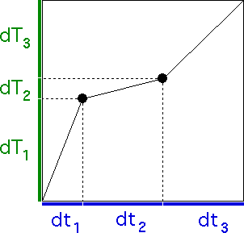

| We need a technical result: |
| Proposition If 0 < |dY1| < 1,
0 < |dY2| < 1, and 0 < |dY3| < 1,
then there is a unique number D satisfying |
| |dY1|D + |dY2|D
+ |dY3|D = 1. |
| Moreover, if |dY1| + |dY2| +
|dY3| > 1, then D > 1. |
| Click here for a proof. |
| Define the trading time increments dT1, dT2, and dT3 by |
| dT1 = |dY1|D |
| dT2 = |dY2|D |
| dT3 = |dY3|D |
|
| Note all the trading time increments are positive. |
| This is no surprise, because
although trading time may go more rapidly or more slowly than clock time, it
cannot go backwards relative to clock time. |
| We will have no violations of causality here. |
| With the trading time and clock time increments we construct the
trading time vs clock time generator. |
|  |